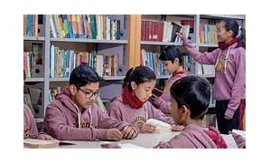

About Our School
ISO 9001:2000 is an International Standard that specifies requirements for a quality management system which meets customer requirements and enhances customer satisfaction. It is based on a systematic, process approach and strives to control and improve organizational results.
Our History
Founded in 1990, Our School has been a leading institution in providing top-quality education. Over the years, we have expanded our curriculum, embraced modern teaching methods, and fostered a supportive learning environment for our students.
Our commitment to excellence has seen us achieve numerous accolades and recognition both locally and internationally. We believe in nurturing the future, and our alumni stand testament to our success in building tomorrow's leaders.